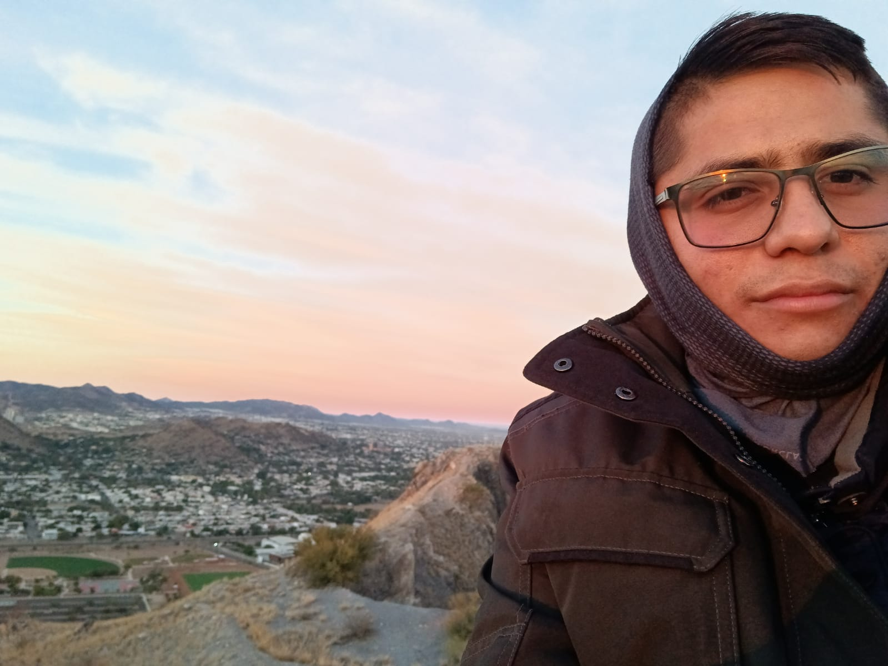

Eduardo Montoya

Web Developer
Summary
"Passionate and resourceful web developer with a solid year of hands-on experience crafting dynamic web and mobile solutions. Proficient in a versatile array of technologies including HTML, CSS, Javascript, Kotlin, SQL Server, and Java. Demonstrated expertise includes spearheading the development of a company's web presence and architecting local management applications within the private sector."
Education
- Bachelor of Software Engineering - University of Technological Institute of Sonora (2017-2022)
Work Experience
Skills
- Responsible -⭐️⭐️⭐️⭐️⭐️
- Adaptable - ⭐️⭐️⭐️⭐️⭐️
- Creative - ⭐️⭐️⭐️⭐️
- Communicative -⭐️⭐️⭐️⭐️
- Organized - ⭐️⭐️⭐️
Awards and Certifications
- Recognition for completing the workshop on deep neural networks, theory and practice - IPN-CITEDI (October 2020)
- Certificate for assisting in the workshop on sound processing and recognition with machine learning techniques - ITSON (February-March 2021)
- Certificate for completing the 3D Video Game Development course with Unity - ITSON (October 2020)
Hobbies
~
Contact